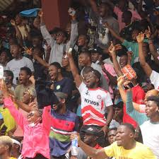
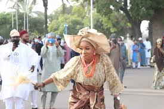
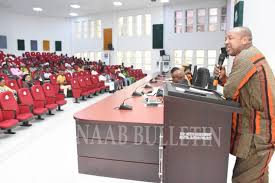

Stay updated on all campus happenings — parties, ceremonies, and special occasions across FUNAAB!

Hall of Residence Party: A Night of Fun and Vibes
The much-anticipated Hall of Residence party held last Friday night was nothing short of electrifying...
Organized by the Hall Executives in collaboration with the Students’ Union Social Committee,
the event brought together students from all colleges to unwind after a busy academic week.
The venue was beautifully decorated with colorful lights and banners, giving off a vibrant club atmosphere.
DJ Skillz kept the crowd entertained with hit tracks while performances from campus artists like
JayBlaq, Nifemi Vibes, and De-Classic had students cheering.
There were dance competitions, comedy sessions, and refreshments sponsored by local vendors.
According to the Hall Chairperson, the goal was to foster unity and relaxation among residents.
The event ended peacefully at midnight under the supervision of the FUNAABSU security team.
“It was the best night of the semester,” said one excited student from Iyalode Hall.
FUNAAB Welcomes New Students at 2025 Freshers’ Orientation
The university management officially welcomed newly admitted students at the annual Freshers’ Orientation Program...
The event took place at the Oduduwa Lecture Theatre with all departments represented.
The Vice-Chancellor, represented by the Dean of Student Affairs, encouraged the new students to focus on
academics and discipline, promising that the university will provide a conducive environment for learning.
The Students’ Union executives were also present to advise freshers on adjusting to campus life.
Various university units such as Health Services, Library, and Security gave presentations
to familiarize students with available facilities.
The event concluded with an entertainment segment featuring poetry, music, and a mini quiz competition.

Students Shine at Annual Cultural Day Celebration
FUNAAB’s campus came alive with color, music, and tradition during the 2025 Cultural Day celebration...
Students proudly showcased their heritage by dressing in traditional attires representing
Nigeria’s diverse ethnic groups.
Each faculty presented cultural displays — including Yoruba bata dance, Hausa drumming, Igbo masquerade,
and Tiv folk songs.
The Vice-Chancellor commended the Student Affairs Division for promoting unity in diversity,
stating that culture is a vital tool for peace and understanding among students.
The highlight of the day was the Cultural Parade, where College of Animal Science
and Livestock Production emerged as the “Most Culturally Represented College.”
It was a celebration of pride, identity, and togetherness.

Students’ Leadership Summit Inspires Change and Innovation
The Students’ Leadership Summit 2025 gathered over 300 student leaders from different colleges
to discuss leadership, governance, and campus development...
The summit, themed “Empowering the Next Generation of Change-Makers”, featured keynote sessions
from guest speakers including alumni and industry professionals.
Panel discussions covered topics such as “Effective Student Leadership,” “Entrepreneurship in a Digital Age,”
and “The Role of Youths in Nation Building.”
According to the SU President, the summit aims to build responsible leaders who will contribute
to the growth of FUNAAB and Nigeria at large.
Participants described the experience as enlightening and transformative.